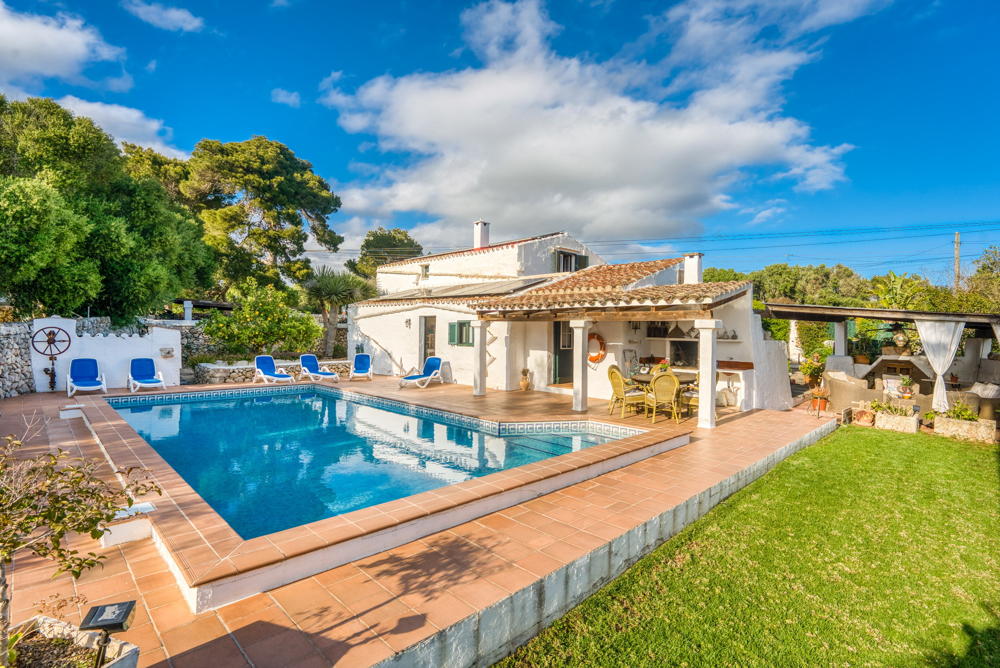

€1.050.000
S'Ullestra, Sant Lluís, Menorca
Open the listingExact character brief: traditional Menorcan house (1900) renovated with open living-dining-kitchen, terraces/pergolas to garden and private pool, outdoor barbecue and an old bread oven. Old mixed with new on 1,491 m² near Sant Lluís — clear keeper.
Opened 5 Sep 2026. Asking €1,050,000. E&V Property ID W-02ZLU3. Specs: 4 bed / 3 bath / ~238 m² / ~1,491 m² / year 1900 / pellet central heating + split A/C + solar. Distant sea views from upper terrace. Energy class B.